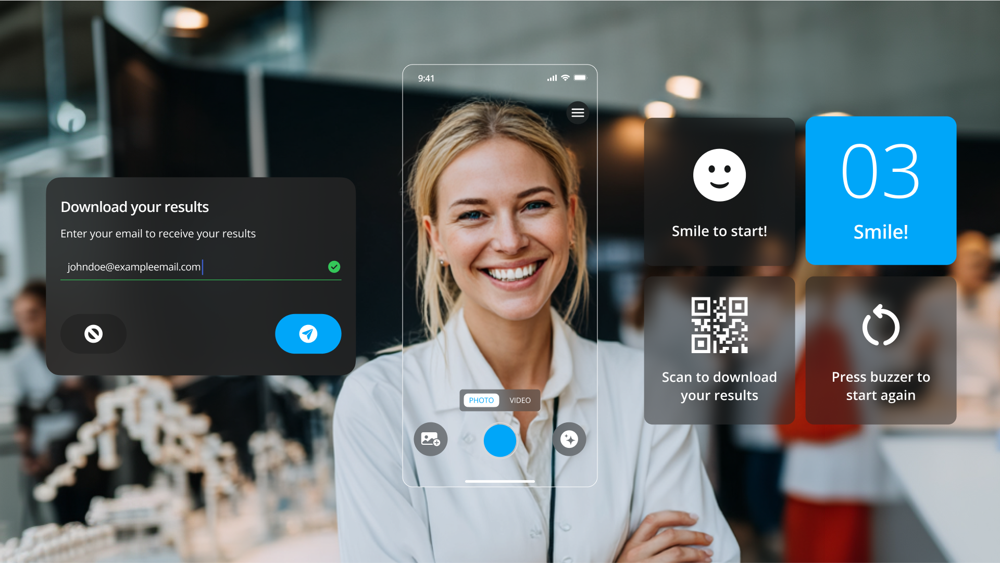
Project Overview
Fläsh, a global B2B supplier of professional teeth whitening products, wanted to support their dental partners with a powerful marketing and engagement tool. Their vision was to create a branded, browser-based app that allowed patients to simulate whitening results using augmented reality, then share those results online to encourage word-of-mouth referrals.
The Challenge
The challenge was to create a seamless, visually appealing app for all three touchpoints, mobile, tablet, and kiosk, while adhering to Fläsh’s existing branding (and future rebranding goals) and catering to a multilingual, global audience. The solution also needed to integrate Banuba’s AI-powered AR SDK, which powered real-time whitening filters and dynamic overlays as part of the user experience.
This app required a responsive design to support the three main touchpoints:
Desktop & Mobile Web: For patients to access whitening simulations and shareable content.
Tablet Displays: For dental clinics to showcase whitening outcomes during consultations.
Kiosk Screens: For trade show demonstrations to attract potential buyers.
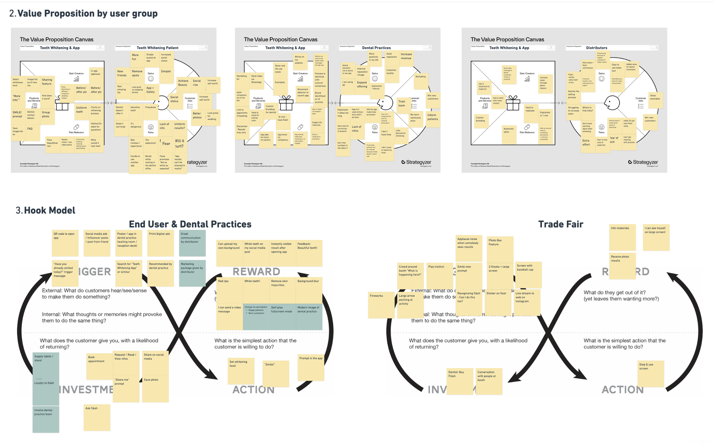
User Insights & Behavior Mapping
We performed a UX strategy workshop that helped frame the unique motivations and behavior loops of Fläsh’s core audiences, including end users, dental practices, and trade show visitors. Using Value Proposition Canvases and Hook Models, we mapped user triggers, actions, and rewards to inform design decisions across mobile, clinic, and kiosk experiences.
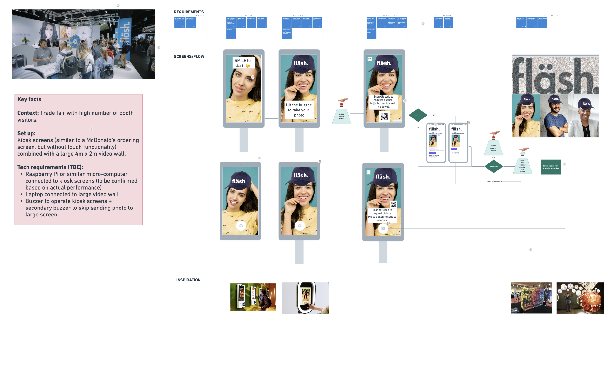
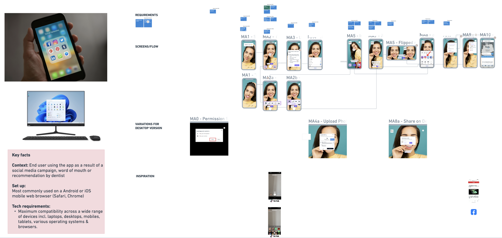
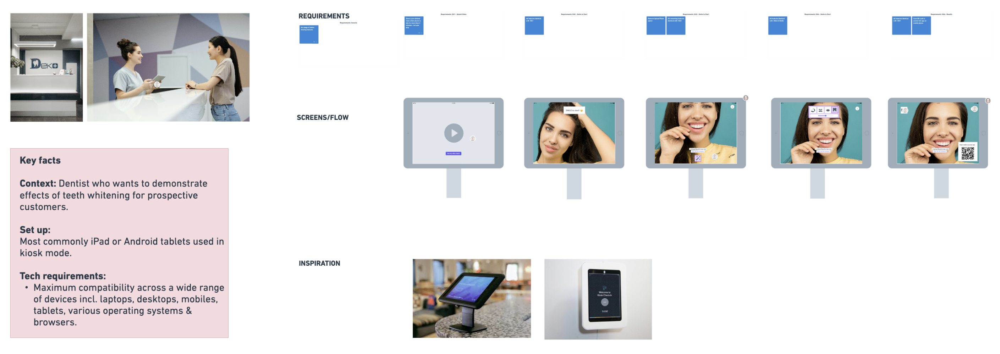
Multi-Touchpoint Experience Architecture
To ensure a seamless and consistent experience across environments, I designed tailored interaction flows and interface systems for each of Fläsh’s three key touchpoints: mobile/desktop web, trade fair kiosks, and in-clinic tablets. Each version was optimized for its specific context, supporting touchless navigation, patient-guided consultations, and social-first sharing, while maintaining a unified design system and brand language.
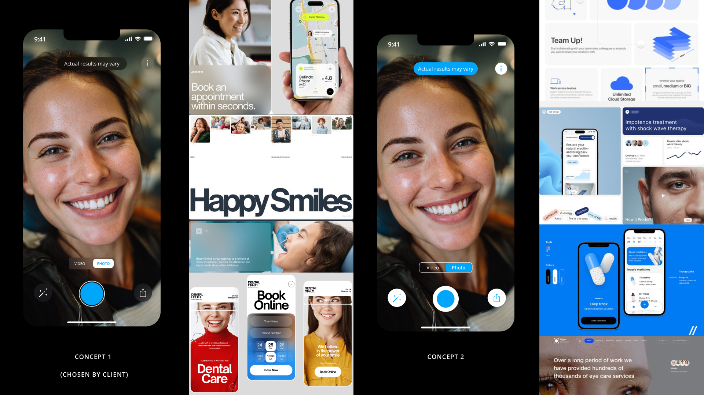
Aligning Product and Brand Direction
As part of the engagement, the client asked for two distinct UI design concepts to evaluate. Both concepts were fully fleshed explorations of how the product’s interface could balance clarity for patients with a bold, modern identity. After review, the client selected the direction that best aligned with their long-term rebranding goals.
This decision was strategic. The chosen UI concept was not just about designing an app. It became the foundation for Fläsh’s broader digital identity, influencing the redesign of their company website and setting the tone for a refreshed brand presence.
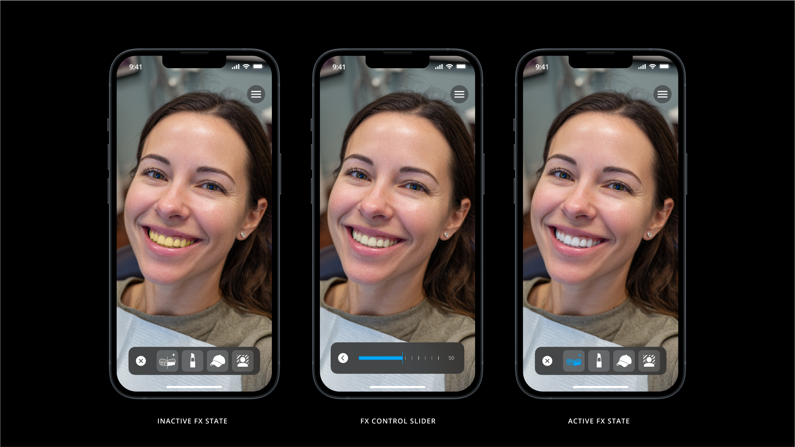
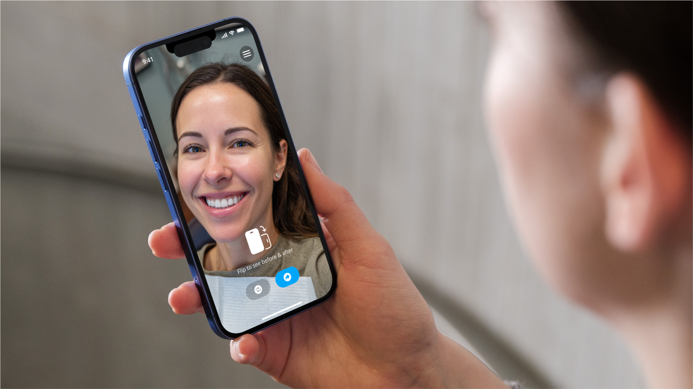
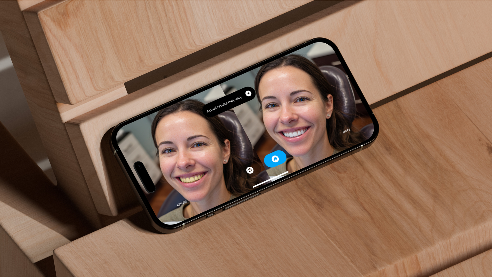
Designing the System
To support multiple environments without fragmenting the experience, I designed a modular, component-based UI system optimized for React Native. Using atomic design principles, I built a flexible structure that ensured consistency across screen sizes, input types, and user flows—without sacrificing clarity or performance. The system included scalable components for navigation, overlays, inputs, animations, and content layout, enabling the app to adapt seamlessly to its three unique contexts.
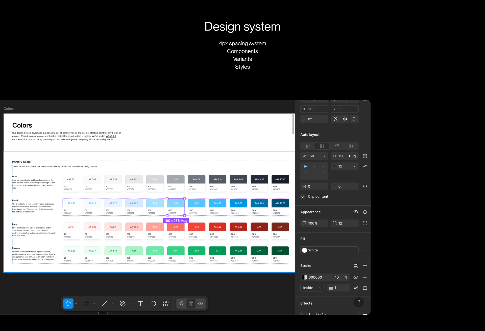
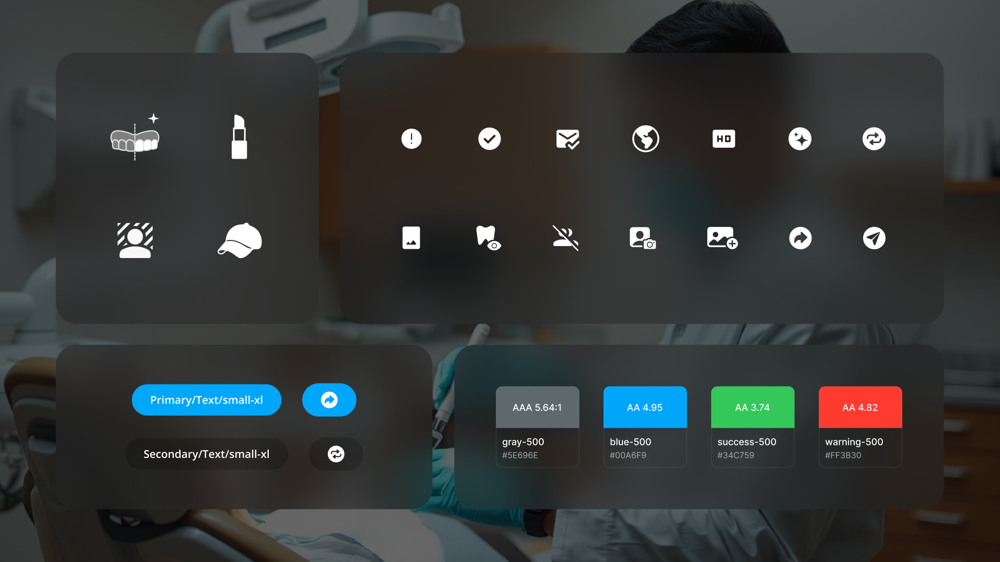
Preparing for Global Use
To ensure the app could scale globally, the design system accounted for 36+ languages, including right-to-left scripts. I applied responsive layout logic, flexible grid systems, and typographic rules to maintain clarity regardless of language length or direction. Every screen state and behavior was documented with developer annotations, streamlining handoff and ensuring a smooth implementation process.
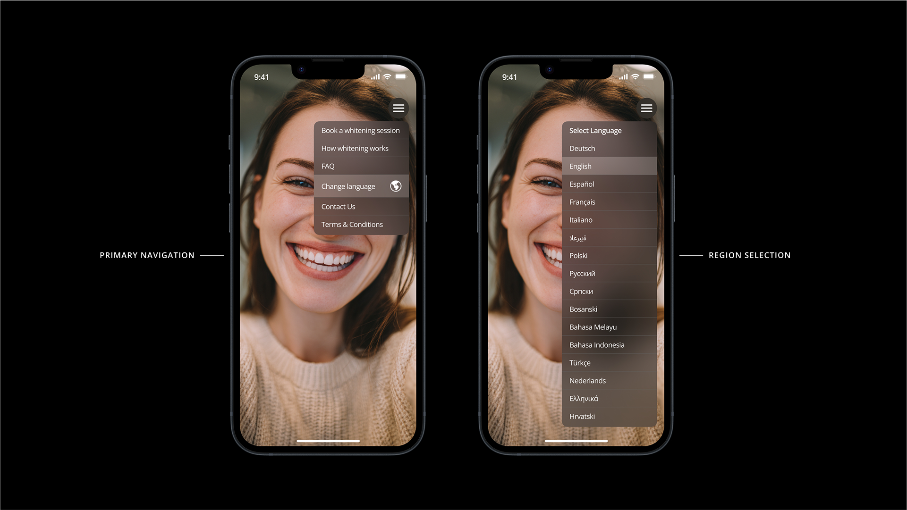
The Core Experience
The final product was a fully responsive web app that adapted seamlessly to mobile, tablet, and kiosk devices, no downloads or logins required. Each version was tailored to its environment: mobile users could launch instantly and simulate whitening with AR filters; tablets supported provider-guided consultations; and kiosks engaged trade show attendees through hands-free, live demos. A unified design system ensured visual consistency, scalability, and global adaptability across all touchpoints.
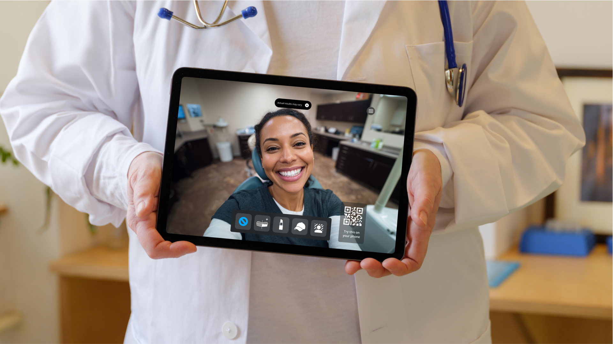
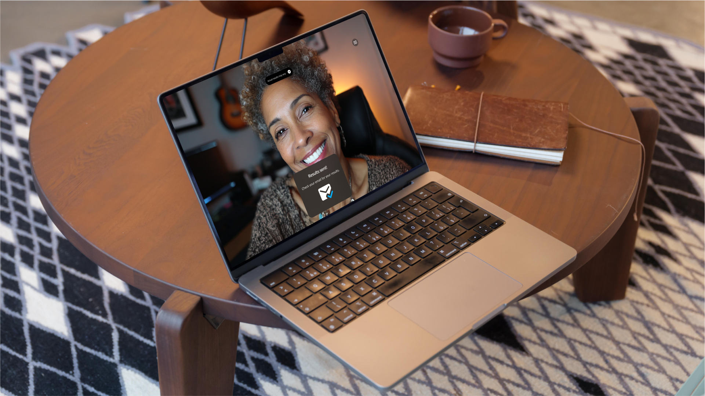
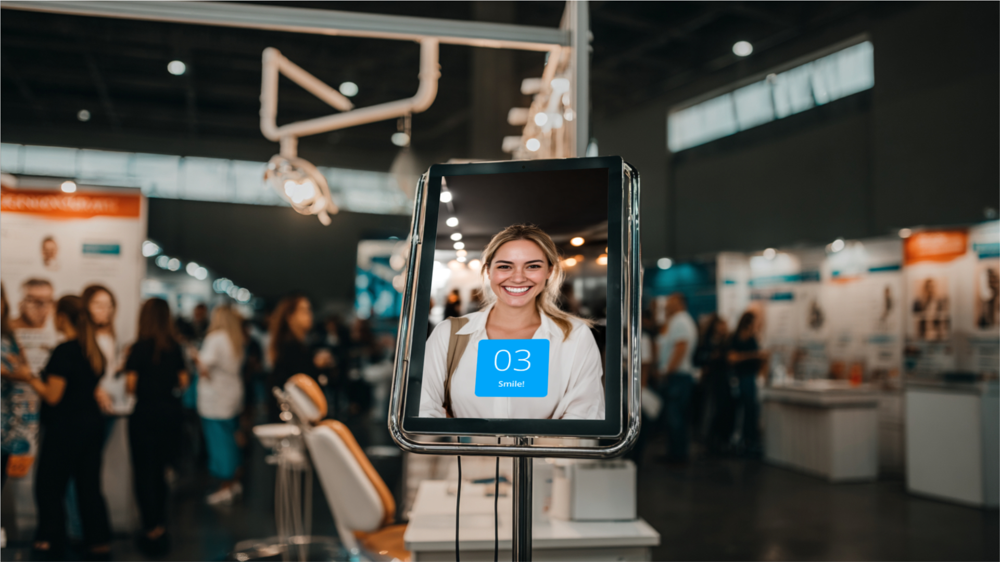
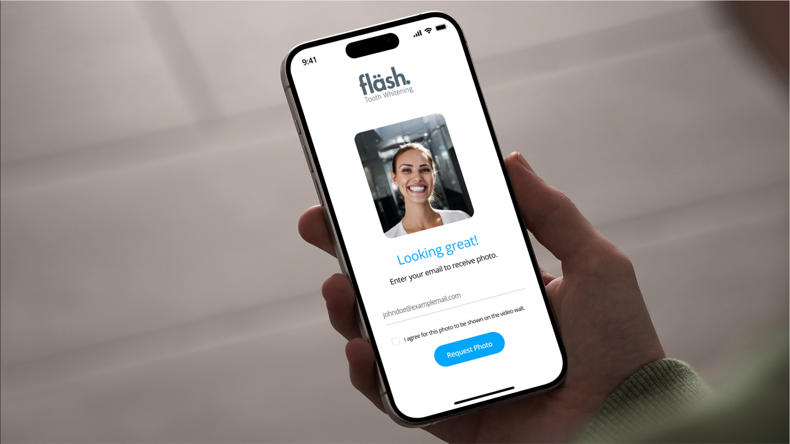
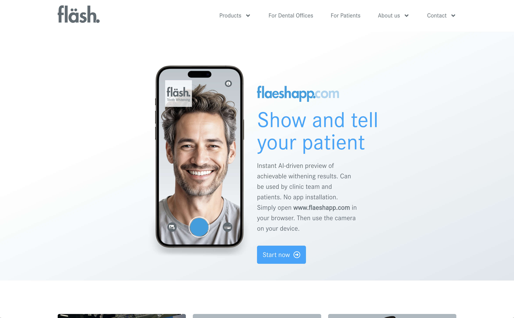
From Product to Brand: Inspiring a Company-Wide Refresh
Following the success of the AR app, Fläsh adopted the visual direction and design system into their broader digital identity. What began as a product design initiative grew into a company-wide rebrand, including a full redesign of their marketing website—rooted in the interface system I established.
Outcome and Impact
The Fläsh Whitening App was well received by stakeholders and early users. Trade show pilots confirmed that the app was drawing attention and driving booth engagement. Internally, the design system served as a foundational asset for the company’s broader brand refresh, accelerating future digital product development and bringing cohesion to their evolving visual identity.
More importantly, the app positioned Fläsh as a forward-thinking partner to its dental clients—providing not just physical products but interactive tools that helped drive real-world results in clinical settings.